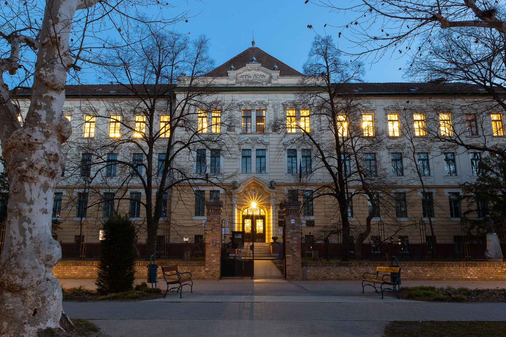
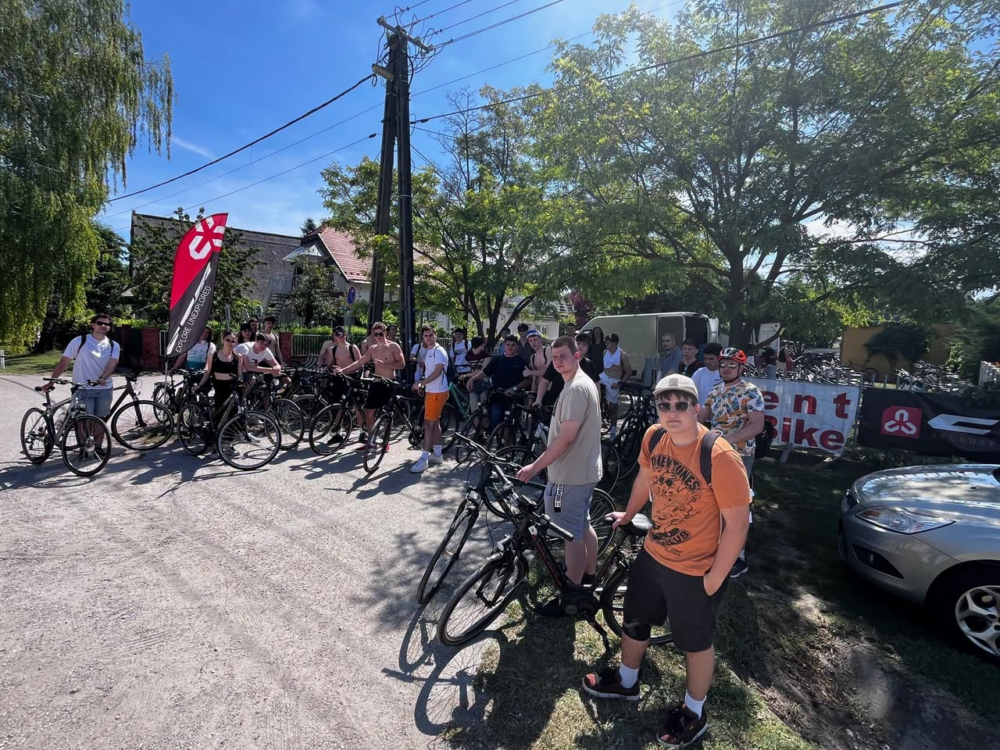
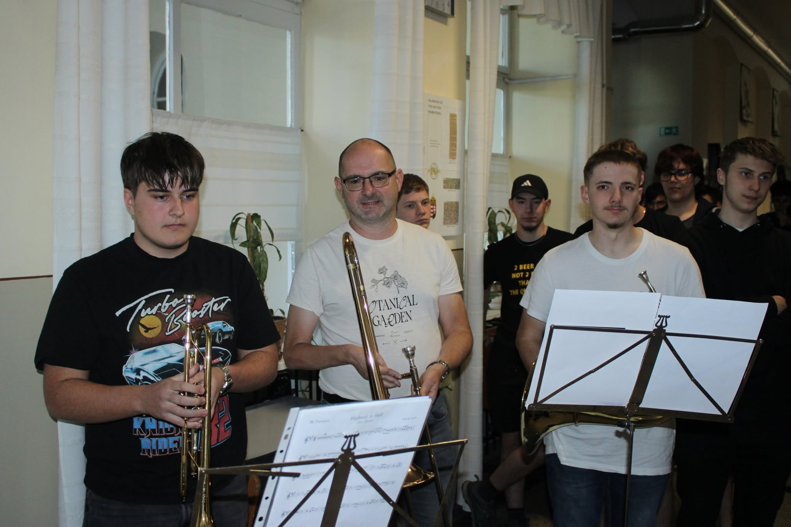

Intézményünk Kiskunfélegyháza gazdag múltra visszatekintő, elhivatott szellemi és szakmai műhelye. A Szent Benedek-i lelkiségre és hagyományokra építve célunk, hogy magas szintű, piacképes szakmai tudást, valamint szilárd erkölcsi alapot adjunk diákjainknak a jövőhöz.
A hagyományos "PG" elnevezés szorosan összefonódott a város oktatástörténetével, míg a Szent Benedek fenntartás új lendületet, keresztény értékrendet és modern szemléletet hozott mindennapjainkba.

Oktató-nevelő munkánk során kiemelt figyelmet fordítunk az egyéni, személyre szabott fejlesztésre, a tehetséggondozásra és a felzárkóztatásra. Fontos számunkra, hogy a diákok ne csak lexikális tudást szerezzenek, hanem céltudatos, magabiztos, közösségért felelősséget vállaló fiatalokká váljanak.
A hit, a munka („Ora et labora”) és a becsület hármas egysége határozza meg iskolai közösségünk mindennapjait.

Iskolánk modern kollégiumi háttérrel is rendelkezik, ahová szeretettel várjuk a távolabbról érkező diákokat. A kollégium nemcsak lakhatást biztosít, hanem otthonos, támogató közösséget is, ahol a délutáni tanulószobák, kulturális és sportprogramok segítik a céltudatos készülést és a tartalmas időtöltést.
